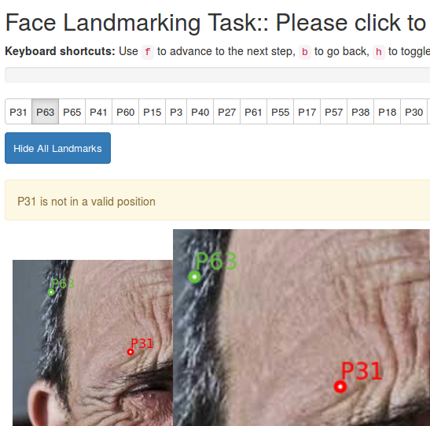

Please ensure that you read all of these instructions prior to accepting the HIT
During this task you will be asked to indicate the location of 22 facial landmarks on four (4) separate images and will be required to repeat the task three (3) times for each image; thus completing the task for 12 images in total. The images will be presented to you in random order and for each image the order in which the facial landmarks are to be identified will also be randomized.
If completed correctly it is estimated that the task will take 15 - 20 minutes to complete.
A bonus payment is available for this HIT which is designed to encourage a careful and considerate approach to completing the task. Those workers who achieve an agreement level of 90% or greater with our "expert" workers will receive a bonus payment of $X for this task. A landmark position is said to be in agreement with our "expert" workers if it is positioned within a specified distance from the position chosen by the expert. A bonus payment is to be awarded if 90% or more of all the landmarks across all images and repeats are in agreement with the "experts".
The components of the user interface are as follows:
f keyboard
shortcut to select the next landmark in the list and the b keyboard shortcut to select the
previous landmark.h to hide / show all the landmarks except the one being placed. By default
only the landmark currently being selected is shown by the system.The system will check the approximate position of each landmark on the target image. If the landmark is placed in a valid position it will show green in colour, if the location is not valid the landmark will be coloured red and a message will appear in the dialogue box as shown in the image below. You will not be able to complete the task until all landmarks for all images are in valid positions

This information will be used for academic research, by accepting this HIT you are giving permission for the information you have provided during this exercise to be used for this purpose.
If you have any further questions you can contact us directly through the Mechanical Turk Contact Requester link